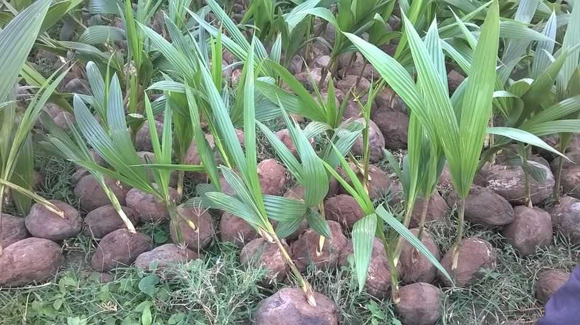

Coconut Farming

Farmers are encouraged to plant the hybrid coconut plants form Kenya Agricultural and Livestock Research Organisation (Kalro), center Matuga.
According to NOCD, Coconut produces over 100 byproducts with the potential to generate over Sh.13 billion annually, which represents 0.4 percent to the country’s Gross Domestic Product (GDP) against the current production worth sh. 3.2 billion.Website
Bixa Farming

Locally known as “mrangi”, for its bright red fruits that have numerous seeds,
Bixa is a cash crop introduced into Kenya’s Coast region in the 1970s.
According to Matuga Kenya Agricultural Research Institute officer, Finyange Pole, Bixa
is crucial for Kwale County, although many people don’t grow the crop.
Youtube
Dairy Farming

The Kwale County government distributed 30 dairy cows, seven calves and hundreds of
hybrid bulls, goats and dairy cattle to farmers in a bid to transform livestock farming in Kwale and unlock the
untapped livestock opportunities.
Kwale County
Post Harvesting

Locally known as “mrangi”, for its bright red fruits that have numerous seeds,
Bixa is a cash crop introduced into Kenya’s Coast region in the 1970s.
There are two Bixa seasons in a year. The crop does well in the and is mainly
grown in Kwale, Mswambweni, Lamu, Malindi and Kiunga, near the Somalia border.
According to Matuga Kenya Agricultural Research Institute officer, Finyange Pole, Bixa
is crucial for Kwale County, although many people don’t grow the crop.
Read More
Coast Composite Hybrid Maize Seeds
The Kwale county government has started distribution is encouraging local farmers to embrace hybrid seeds that are cetified. The Coast composite maize seeds that was developed by KALRO has proved suitable for the region. The maize variety has high production in the coast region. It is also resistant to diseases and instects. Youtube
Read MoreDrip Irrigation
The Kwale county government has started distribution is encouraging local farmers to embrace hybrid seeds that are cetified. The Coast composite maize seeds that was developed by KALRO has proved suitable for the region. The maize variety has high production in the coast region. It is also resistant to diseases and instects. Youtube
Read More
Goats Keeping
Goat keeping is a source of livelihood many local members. MFG provides Galla goats which are known for their high quality milk and meat and resilience to harsh climatic conditions and diseases unlike other breeds. The goats will enable them fetch better profits for the farmers that will in turn spur county economic growth and uplift their living standards.
Read More
Pesticides and Herbicides
In conjuction with Pwani Agrovet and Bahari Agrovet, Matuga Farmers Group enables local farmers to get appropriate pesticides to protect their crops and animals from harmful pests and diseases. Farmers can also get herbicides to control weeds in their farms
Read MoreFarm tools
Local farmers are facilitated to acquire farm tools to enable them carry out farm activities efficiently and effectively. A wide variey of the tools are showcased during field outreach activities and seminars the ordinto train local farmers how to use and maintain them.
Read More